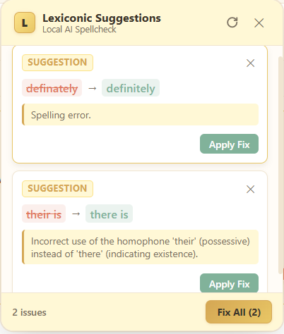

Lexiconic runs completely offline using local LLMs via Ollama. Get real-time grammar suggestions in Gmail and beyond, without ever sending your keystrokes to the cloud.

Your text never leaves your device. Lexiconic connects locally to your Ollama instance, ensuring complete data privacy.
Powered by optimized local models, Lexiconic delivers instant grammar and spelling corrections as you type.
Designed specifically to work flawlessly with Gmail's rich text editor, preserving your formatting and signatures.
To keep your data private, Lexiconic requires a local instance of Ollama running a compatible model.
Download and install Ollama from the official website at ollama.com. Ollama is free, open source, and runs locally on macOS, Windows, and Linux.
Visit ollama.com/download to get the installer for your operating system, or install via terminal on Linux:
curl -fsSL https://ollama.com/install.sh | sh
To allow the Chrome extension to communicate with your local Ollama instance, you must set the OLLAMA_ORIGINS environment variable.
export OLLAMA_ORIGINS="chrome-extension://*"
ollama serve
If using the macOS app, run: launchctl setenv OLLAMA_ORIGINS "chrome-extension://*"
Lexiconic supports two high-performance models out-of-the-box:
# Default model:
ollama pull gemma4:e4b
# Lightweight / ultra-fast model (1B):
ollama pull llama3.2:1b